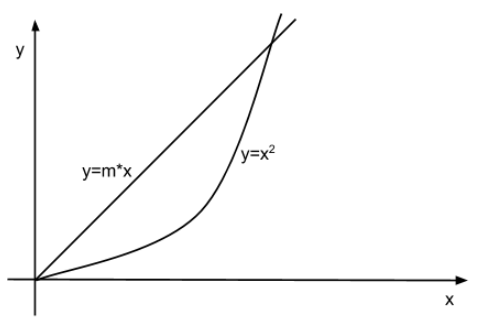
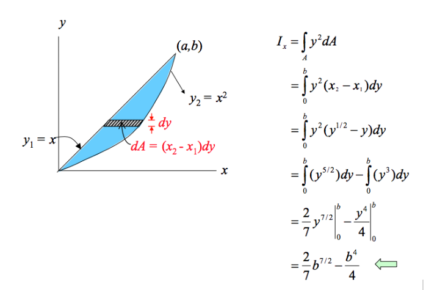

Fisica 1 - Prova scritta
Antonio Pierro @antonio_pierro_
Per consigli, suggerimenti, eventuali errori o altro potete scrivere una email a antonio.pierro[at]gmail.com
Risultati appello di Fisica I - 01-02-2014
Risultati appello di Fisica I - 11-01-2014
Appello 11/01/2014 - Esercizio 1
- Un cilindro omogeneo di raggio r, altezza h e densità \(ρ_C\) galleggia su un liquido di densità \(ρ_L\) in posizione verticale lungo l'altezza h.
- Se gli viene impressa una leggera pressione, senza alcuna rotazione, si osserva che, una volta lasciato libero, compie un moto armonico.
- Determinare il periodo del moto.
- \((r = 10cm, ρ_C = 0.8g/cm3 , ρ_L = 1g/cm3 , h = 8cm)\)
Appello 11/01/2014 - Esercizio 1 - Soluzione
- In condizione di equilibrio, ovvero prima che al cilindro venga impressa una leggera pressione:
\[
\vec R = 0 \Rightarrow P - S_{A} = 0 \Rightarrow \pi r^2 x_0 ρ_L g = m g
\]
- Dopo che al cilidro viene impressa una leggera pressione:
\[
\vec R = m \vec a \Rightarrow P - \pi r^2 (x_0 + x) ρ_L g = m \frac{d^2 x}{dt^2}
\]
\[
m \frac{d^2 x}{dt^2} + \pi r^2 ρ_L g * x = 0 \Rightarrow T = 2\pi \sqrt{\frac{ρ_C h }{ρ_L g }}
\]
Appello 11/01/2014 - Esercizio 2
- Un cilindro avente sezione di 25 \(cm^2\) e contenente del gas ideale è chiuso da un pistone mobile, che ha massa 500 grammi e che si trova a un'altezza di 2 metri dal fondo del cilindro.
- Se l'energia interna del gas aumenta di 1 Joule in seguito a una trasformazione adiabatica, a che altezza si troverà il pistone rispetto al fondo del cilindro?
Appello 11/01/2014 - Esercizio 2 - Soluzione
- Una trasformazione adiabatica avviene senza scambi di calore quindi la variazione di energia interna è pari al lavoro subito o fatto.
- Per il primo principio della Termodinamica:
\[
dU = -dW \Rightarrow \Delta U = 1 Joule \Rightarrow mg \Delta y = \Delta U
\]
\[
\Delta U > 0 \Rightarrow dW < 0 \Rightarrow \Delta y = - \frac{\Delta U}{mg}
\]
\[
y = h - \frac{\Delta U}{mg} = 180 cm
\]
Appello 01/02/2014 - Esercizio 1
- Determina il momento d'inerzia rispetto all'asse x di un corpo avente densità di massa superficiale costante σ e la cui superficie è delimitata dalle curve \(y=mx\) e \(y=x^2\).

Appello 01/02/2014 - Esercizio 2 - soluzione

Appello 01/02/2014 - Esercizio 2
- Un recipiente avente il volume di 6 litri è diviso in due parti A e B separate da una parete mobile e conduttrice. Le pareti esterne sono adiabatiche.
Lo scomparto A contiene una mole di gas monoatomico a temperatura \(T_A\) = 200K, mentre nello scomparto B c'è una mole di gas, anch'esso monoatomico, a temperatura \(T_B\) = 400K.
La pressione è la stessa nei due scomparti.
-
Calcolare la variazione dell'energia interna del sistema durante la trasformazione e pressione, temperatura e volume dei due scomparti A e B nello stato di equilibrio.
Appello 01/02/2014 - Esercizio 2 - Soluzione
- Lo stato finale di equilibrio prevede che nei due scomparti si abbia la stessa temperatura e la stessa pressione.
Poiché il numero di moli è lo stesso, i due gas occuperanno lo stesso volume, pari a metà del volume complessivo
- Il gas B, più caldo, cede calore al gas A più freddo che, riscaldandosi si espande .
A compie lavoro positivo e B fa lavoro negativo.
Il Sistema non scambia energia con l’esterno, né tramite lavoro, né tramite calore, quindi l’Energia interna non varia ( ∆U=0)